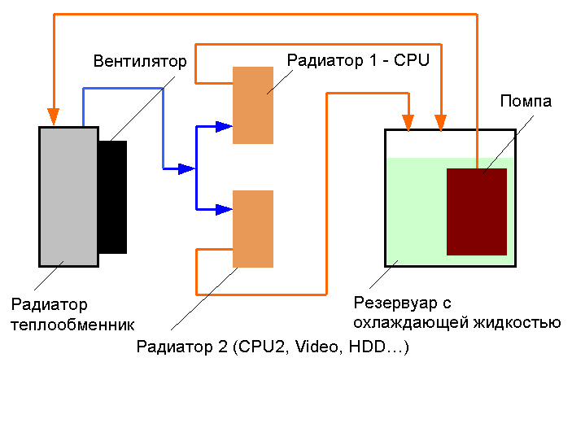

Раздел: Графические ускорители (Видеокарты)
Графический процессор (GPU) давно перерос роль простого вывода картинки на экран. В 2026 году видеокарты стали ключевым элементом для работы локальных нейросетей, генеративного искусственного интеллекта, 3D-моделирования и, разумеется, современных видеоигр высокой четкости с полной трассировкой лучей (Path Tracing). В этом сегменте рынка традиционно конкурируют три технологических гиганта: NVIDIA, AMD и активно развивающийся Intel.
Ключевые технологии графики в 2026 году
При выборе современной видеокарты пользователи обращают внимание не только на «чистую» вычислительную силу, но и на поддержку технологий умного масштабирования:
- NVIDIA DLSS 4.0: Революционный алгоритм реконструкции кадров и текстур на базе тензорных ядер нового поколения, минимизирующий артефакты апскейлинга.
- AMD FSR 4: Полностью открытый стандарт масштабирования, перешедший на полноценное использование аппаратных ИИ-блоков архитектуры RDNA.
- Ray Tracing (Трассировка лучей): Расчет физически корректного поведения света, отражений и теней в реальном времени, ставший базовым стандартом индустрии.
ТОП-5 видеокарт на 2026 год
По полученным данным о производительности видеокарт ниже представлен актуальный рейтинг лучших решений текущего сезона:
1 место — NVIDIA GeForce RTX 5090 (Ультимативный флагман)
Бескомпромиссный лидер рынка на новой архитектуре Blackwell. Оснащенная колоссальным объемом сверхбыстрой памяти GDDR7, эта видеокарта создана для гейминга в честном разрешении 4K/8K, а также профессионального обучения тяжелых ИИ-моделей. Единственный минус — высокое энергопотребление.
2 место — NVIDIA GeForce RTX 5070 Ti (Лучший баланс возможностей и цены)
Главный хит продаж 2026 года для продвинутых пользователей. Карта предлагает производительность на уровне флагманов прошлого поколения, полную поддержку DLSS 4.0 и отличный объем видеопамяти, легко справляясь с любыми играми на максимальных настройках графики.
3 место — AMD Radeon RX 8900 XTX (Король «чистой» производительности)
Топовое решение от AMD на базе архитектуры RDNA 4. Модель предлагает традиционно больший объем видеопамяти по сравнению с конкурентами за ту же цену и колоссальную скорость в стандартном растровом рендеринге (без трассировки лучей), являясь отличным выбором для работы и киберспорта.
4 место — AMD Radeon RX 8700 XT (Лучший среднебюджетный выбор)
Народная видеокарта нового поколения. Идеально сбалансирована для игр в разрешении 1440p (2K). Обладает низким тепловыделением, что позволяет устанавливать её в компактные корпуса со стандартными блоками питания.
5 место — Intel Arc Celestial B770 (Прорыв в бюджетном сегменте)
Второе полноценное поколение дискретной графики от Intel продемонстрировало глубокую работу над ошибками. За счет отличной отладки драйверов и привлекательной цены, эта карта стала лучшим решением начального уровня для входа в современный гейминг.
Сравнительные технические характеристики ТОП-видеокарт
| Модель видеокарты |
Объем памяти |
Тип памяти |
Шина памяти |
Рекомендуемый БП |
| NVIDIA GeForce RTX 5090 |
28 ГБ |
GDDR7 |
448-bit |
850 Вт+ |
| NVIDIA GeForce RTX 5070 Ti |
16 ГБ |
GDDR7 |
256-bit |
650 Вт |
| AMD Radeon RX 8900 XTX |
24 ГБ |
GDDR6X / GDDR7 |
384-bit |
750 Вт |
| AMD Radeon RX 8700 XT |
16 ГБ |
GDDR6X |
256-bit |
600 Вт |
| Intel Arc Celestial B770 |
12 ГБ |
GDDR6 |
192-bit |
550 Вт |
Конструкция системы охлаждения
Современные графические процессоры выделяют значительное количество тепла. Посмотреть схему строения радиатора на тепловых трубках можно ниже:

← На Главную страницу